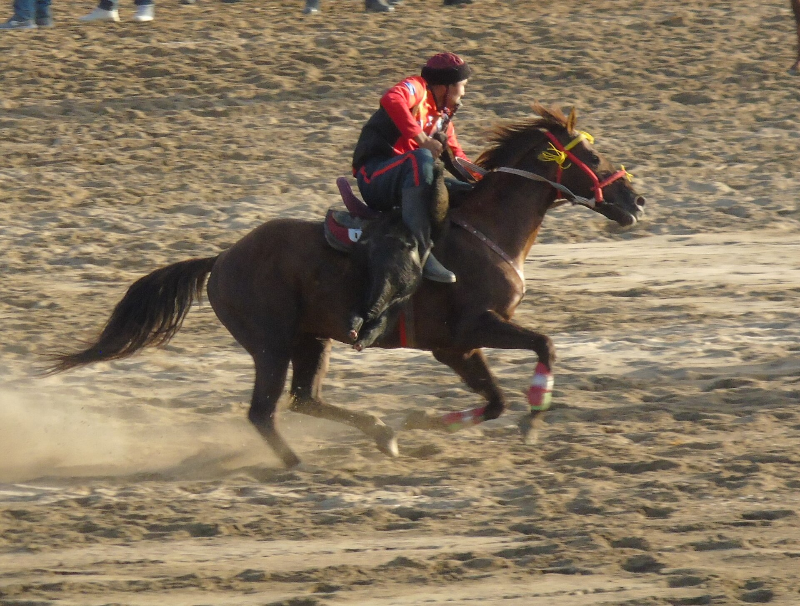

World Nomad Games Conclude: 113 Countries, 3,000 Athletes, Kazakhstan Leads the Medal Count
The sixth World Nomad Games ran from Aug. 31 to Sept. 6 in Kyrgyzstan and were the largest edition in the competition's history. The opening was held in Bishkek and the closing ceremony in Cholpon-Ata.

The sixth World Nomad Games were held in Kyrgyzstan from Aug. 31 to Sept. 6, 2026. The opening ceremony took place in Bishkek on Aug. 31, and the closing ceremony on Sept. 6 in the city of Cholpon-Ata on the shore of Lake Issyk-Kul. Roughly 3,000 athletes from 113 countries took part — the highest figure in the history of the games.
The medal distribution
Kazakhstan took the lead in the overall team standings. According to The Astana Times, Kazakhstan had 55 medals as of Sept. 4: 25 gold, 13 silver and 17 bronze. Host Kyrgyzstan placed second with 58 medals (23 gold, 24 silver, 11 bronze), and Russia third with 23 medals (4 gold, 6 silver, 13 bronze).
- Dates: Aug. 31 – Sept. 6, 2026
- Host: Kyrgyzstan (Bishkek, Cholpon-Ata)
- Countries: 113
- Athletes: ~3,000
- Kazakhstan: 55 medals (25 gold, 13 silver, 17 bronze)
- Kyrgyzstan: 58 medals (23 gold, 24 silver, 11 bronze)
- Russia: 23 medals (4 gold, 6 silver, 13 bronze)
- Edition number: 6th
Which sports
The competition program features traditional sports of nomadic peoples. Among them are kok-boru (a team game played on horseback), audaryspak (wrestling on horseback), Kazakh kuresi, alysh, arm wrestling, sambo, tug of war, traditional archery, horse racing and eagle hunting.
Arm wrestling was the most productive discipline for the Kazakh national team — the squad won 12 medals in the event (7 gold, 4 silver, 1 bronze).
Standout athletes
Sirim Izbasarov won the up-to-100-kilogram weight class in audaryspak, taking his third championship title in the history of the games. Darin Utkelbay took gold in the 90-kilogram class.
In eagle hunting, Serikbolsyn Zhalgasuly and his bird, nicknamed Jebe, took first place. In archery, Ayash Kabdollayeva and Asemgul Galimzhanova won gold medals. Kazakhstan also won the joryq, a 300-kilometer long-distance horse race; the race lasted four days.
The awards ceremony in Astana
A ceremony honoring the winners and medalists of the sixth World Nomad Games was held in Astana on Sept. 11. Kazakh President Kassym-Jomart Tokayev attended.
Tokayev noted that the country is expanding its role in hosting major international sporting events: seven world championships will be held in Astana next year, and Almaty will host the 10th Asian Winter Games in 2029. At the same ceremony, he announced that he would address the nation in October on the country's goals and priorities.
The history of the games
The World Nomad Games were first held in 2014 in the Kyrgyz city of Cholpon-Ata. The subsequent editions in 2016 and 2018 also took place in Kyrgyzstan. In 2022 the games were held in the Turkish city of İznik, and in 2024 in Astana, Kazakhstan.
The competition's aim is to preserve and promote the traditional sports and cultural heritage of nomadic civilizations. Ethno-villages, craft exhibitions and folklore programs are also organized as part of the event.
What it means for the region
For Kyrgyzstan, the games coincided with the peak of the tourist season: the Issyk-Kul region is the country's main recreation area. The event was also presented as a vehicle for the country's international recognition.
Kyrgyzstan hosted another major international event that same week in 2026: the Shanghai Cooperation Organization summit was held in Bishkek on Aug. 31 and Sept. 1. In other words, both sporting and political events were concentrated in the capital within a single week.
Context
About the sports
Kok-boru is a team game played on horseback in which riders attempt to throw the carcass of a goat or lamb into the opponents' goal. The game goes by different names across Central Asia: kok-boru in Kyrgyzstan, kokpar in Kazakhstan, uloq or kupkari in Uzbekistan, and buzkashi in Afghanistan. In 2017, kok-boru was inscribed on UNESCO's list of intangible cultural heritage.
Audaryspak is a form of wrestling in which riders, seated on horseback, try to pull an opponent from the saddle. Kazakh kuresi is a national form of wrestling; alysh is a belt wrestling style widespread among Turkic peoples.
Eagle hunting is one of the oldest traditions of nomadic peoples. In competition, the bird is judged on its response to the call, its ability to find the target and its hunting skill. This tradition has also been inscribed on the UNESCO list.
The joryq is a long-distance horse race. At the 2026 games the distance was 300 kilometers, and the race lasted four days.
The organizational history of the games
The World Nomad Games were first held in 2014 in the city of Cholpon-Ata on the shore of Lake Issyk-Kul in Kyrgyzstan. Athletes from 19 countries took part in that first edition.
The subsequent editions in 2016 and 2018 also took place in Kyrgyzstan. In 2022, the games were organized outside the country for the first time — in the Turkish city of İznik. In 2024, the competition was hosted by the Kazakh capital, Astana.
The sixth edition in 2026 returned to Kyrgyzstan and set a record for the number of participants: roughly 3,000 athletes from 113 countries.
The tourism and economic dimension
The games coincided with the peak of the tourist season in Kyrgyzstan. The Issyk-Kul region is the country's main recreation area; thousands of tourists come here from neighboring countries during the summer season.
Ethno-villages are set up as part of the event: traditional yurts are erected, and craft exhibitions, national cuisine and folklore programs are presented. This element makes up the competition's cultural program.
Kyrgyzstan hosted another major international event that same week in 2026: the Shanghai Cooperation Organization summit was held in Bishkek on Aug. 31 and Sept. 1.
The state of the medal table
As of Sept. 4, Kazakhstan led the overall team standings with 55 medals — 25 gold, 13 silver and 17 bronze. Host Kyrgyzstan was ahead on total medals: 58, including 23 gold, 24 silver and 11 bronze.
Russia took third place with 23 medals (4 gold, 6 silver, 13 bronze). The final medal table is confirmed after the closing ceremony; as of Sept. 4, athletes were still expected to compete in 11 more disciplines.
Arm wrestling was the most productive discipline for Kazakhstan: the squad won 12 medals in the event — 7 gold, 4 silver and 1 bronze.
The awards ceremony in Astana
A ceremony honoring the winners and medalists of the sixth World Nomad Games was held in Astana on Sept. 11. Kazakh President Kassym-Jomart Tokayev attended.
Tokayev noted that the country is expanding its role in hosting major international sporting events: seven world championships will be held in Astana next year, and Almaty will host the 10th Asian Winter Games in 2029.
At the same ceremony, the president announced that he would address the nation in October on the country's goals and priorities.
Kok-boru is a traditional game widespread in Central Asia that goes by different names in different countries: kok-boru in Kyrgyzstan, kokpar in Kazakhstan, uloq or kupkari in Uzbekistan, and buzkashi in Afghanistan. In 2017, kok-boru was inscribed on UNESCO's list of intangible cultural heritage.
The official final medal table and full information on the host of the next edition are expected to be announced separately by the organizers.